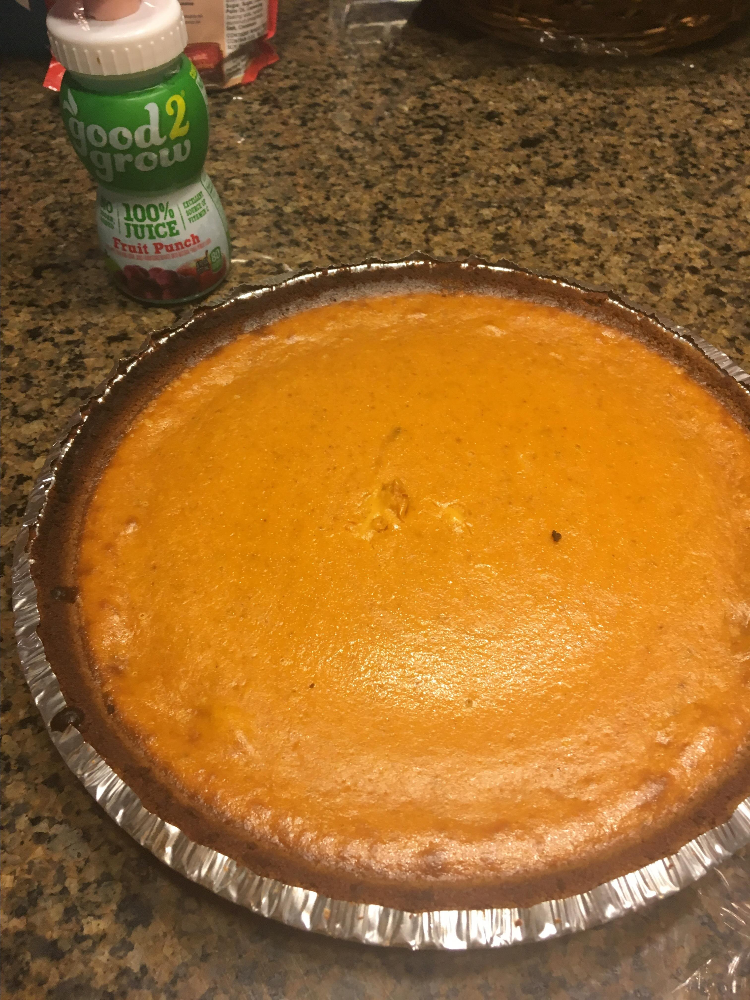

Pie

Description
"Easy as pie" is justthe case with this pie recipe.
Ingredients:
- 2 eggs
- 1 (16 ounce) can pumpkin puree
- 1 (14 ounce) can sweetened condensed milk
- Steps
- Preheat the oven to 425 degrees F (220 degrees C).
- Combine eggs, pumpkin puree, sweetened condensed milk, and pumpkin pie spice in a large bowl and mix until combined.
- Fit pie crust into a 9-inch pie dish; pour pumpkin mixture into the crust.